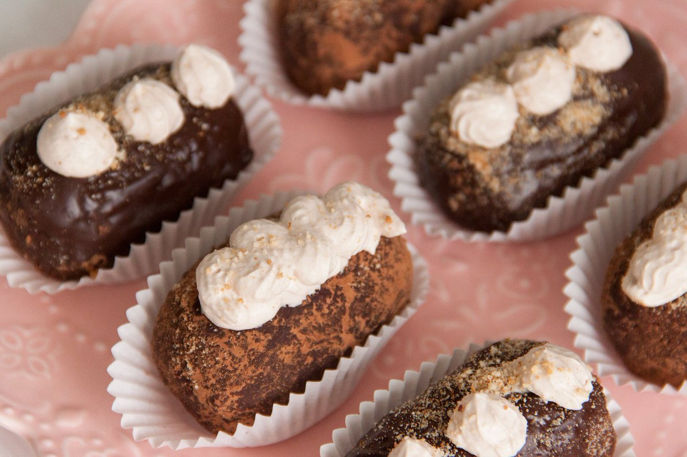
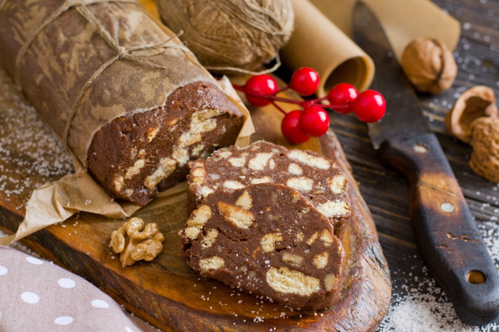

Тортики и кексы которые так помяниться вам из детства
Описание
Многими любимая и вкусное пирожное «картошка» с кремом сверху из детства, что так любимо у взрослых и детей
Орешки что пекли в формах и наполнялись варёной сгущёнкой что вы делали с мамой в детстве и пили чай с ними

Лакомство это представляет собой воздушный торт из многих листов тонкого и хрустящего теста, прослоены - масляным кремом
Шоколадная колбаса – десерт без выпечки и делаться собственными руками с кусочками гредский ореха и шоколада
Корзиночка — пирожное в виде корзинки из песочного теста, наполненной заварным кремом, а снизу под кремом сладкий клубничный или персиковый джем на ваш выбор
Хрустяшее, но таившее во рту безе сделанное из яичных белков и сахарной пудры
Пирожное в виде трубочки из слоёного теста с заварным кремом, посыпанное сахарной пудрой
Сделанное из слоеного и заварного теста. Слоеное тесто является хрустящей основой пирожного и как цветочек с лепестками держащий другой вид теста – заварное. А внутри же находится ванильный заварной крем
Изготовлена из сдобного дрожжевого теста с добавлением изюма, иногда цукатов. После же выпечки обильно пропитывается сахарным сиропом с добавлением небольшого количества коньяка. А верхняя часть кекса обмазывается глазурью.
Пирожное в виде трубочки из заварного теста, покрытый глазурью и с начинкой из заварного крема
Состав
Пироженное:Печенье,сгущенное молоко,масло сливочное,какао-порошок; Крем:масло сливочное,сахарная пудра,молоко сгущённое
Сливочное масло,сахар,ванильный сахар,яйца,мука,разрыхлитель,щепотка соли,сгущенное молоко
Коржи:сливочное масло,мука,соль,яблочный уксус,вода; Крем:сливочное масло,сгущенное молоко
Печенье сахарное,орехи грецкие,какао-порошок,сахар,молоко,масло сливочное
Корзиночка:Мука,Масло сливочное,Яйца,Сахар,Разрыхлитель,Солья,Ванилин,клубничный или персиковый джем; Крем:молоко,яйца,мука,сахар,масло сливочное,ванильный сахар
Белки яичный,сахар,кислота лимонная
Тесто:яйца,соль,вода,уксус,сливочное масло,мука; Крем:молоко,яйца,мука,сахар,масло сливочное,ванильный сахар
Слоёное тесто:яйца,соль,вода,уксус,сливочное масло,мука; Заворное тесто:вода,молоко,масло сливочное,мука,яйцо,соль; Крем:молоко,яйца,мука,сахар,масло сливочное,ванилин
Тесто:мука,яйца,сахар,дрожжи,масло сливочное,молоко,соль,изюм,цукаты; Пропитка:сахар,вода,коньяк Глазурь:сахар,вода,сок лимонный
Тесто:вода,молоко,масло сливочное,мука,яйцо,соль; Крем:молоко,яйца,мука,сахар,масло сливочное,ванильный сахар Глазурь:сахар,вода,сок лимонный